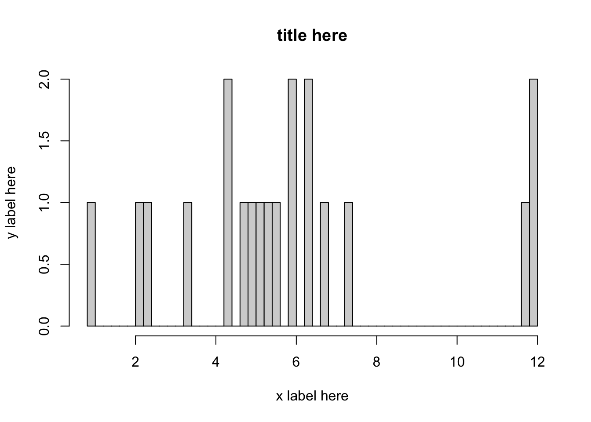
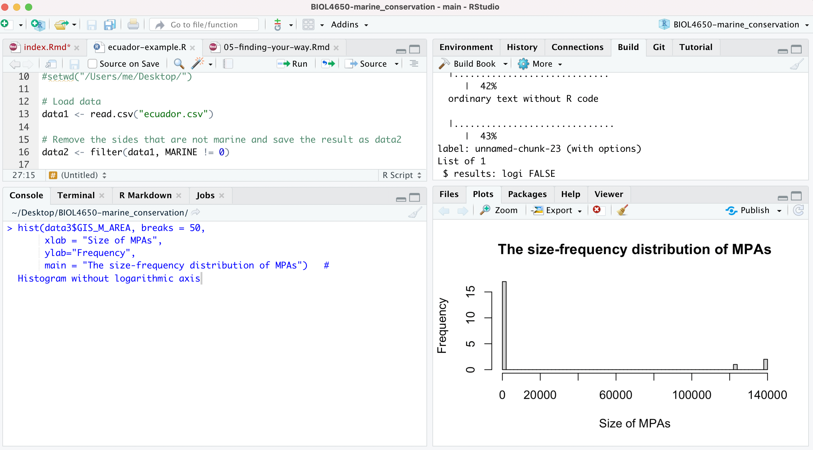
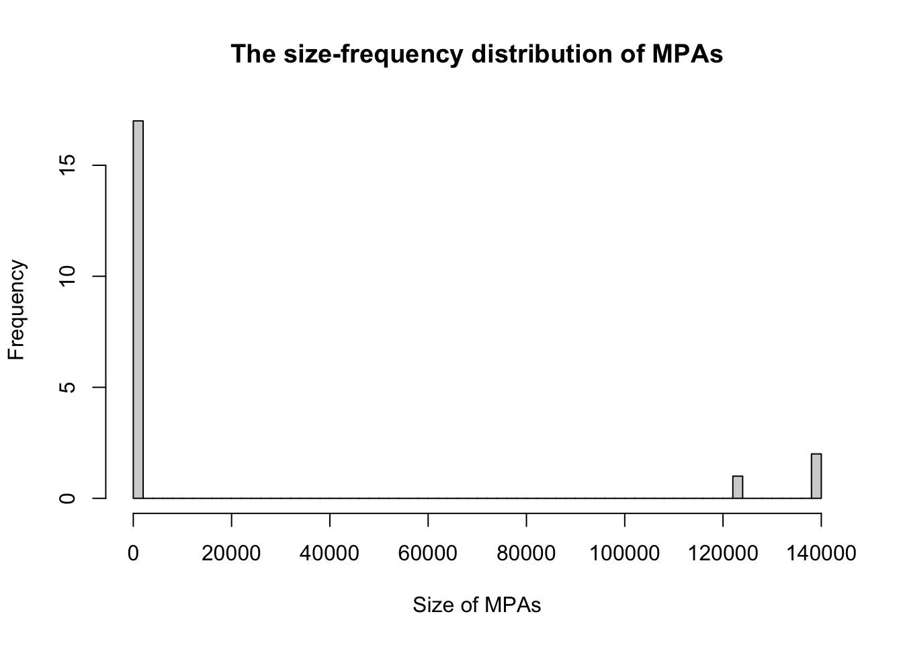
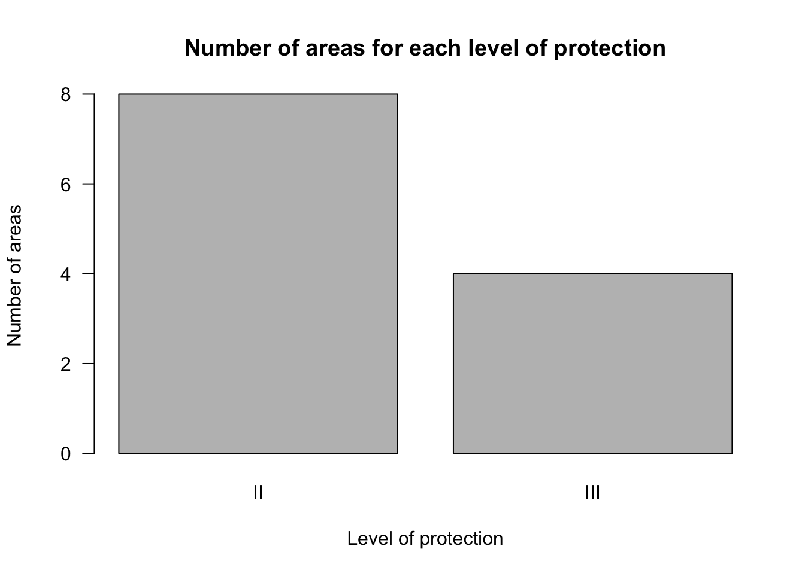
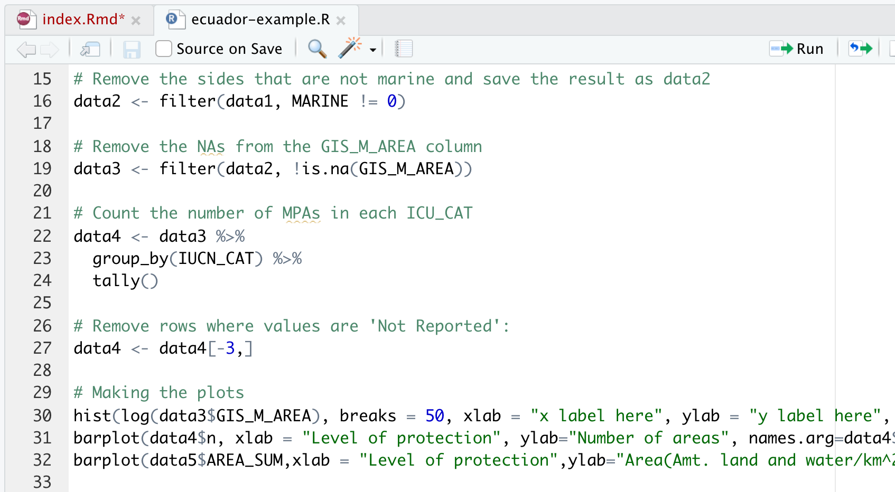

4 <<<<<<< HEAD
Approach 2: base R
data5 <- aggregate(GIS_M_AREA ~ IUCN_CAT, data3, sum)Both approaches
e31e86f113159ce879830e4261452e0825b3f3ab We can check the result by typing, in the Console:
data5## # A tibble: 3 x 2
## IUCN_CAT AREA_SUM
## <chr> <dbl>
## 1 II 125943.
## 2 III 277777.
## 3 Not Reported 2718.Note that this time, we would like to leave the categories: Not applicable, Not assigned and Not reported (Evan is this right???). If data5 looks good, you will want to add the commands that produced data5 to your R Script.
If it is confusing to follow such specific instructions, and you would like to have a more general understanding of the commands, you might read Handling the data.
4.1 Making graphs
In this section we will made graphs of data4 and data5.
- We would like to construct a histogram to graph the size-frequency distribution.
We will construct a histogram without a logarithm scale first, with the function hist(). The data we need to use are data3$GIS_M_AREA which contains the areas of the marine protected areas:
hist(data3$GIS_M_AREA, breaks = 50,
xlab = "Size of MPAs",
ylab="Frequency",
main = "The size-frequency distribution of MPAs") # Histogram without logarithmic axis
Note that the graph appears in the plot window:

We can plot these results on a logarithm scale as:
hist(log(data3$GIS_M_AREA), breaks = 50, xlab = "x label here", ylab = "y label here", main = "title here") # Histogram with logarithmic axis
The above command, when you have corrected the title and axis labels, you can add to your R Script.
We can use a barplot to show the number of areas under each level of protection from the data contained in data4. Remember that data4 has two columns:
data4## IUCN_CAT n
## 1 II 8
## 2 III 4The values of interest are in the column named n, which are the numbers associated with each level of protection. We refer to just this column using the command data4$n. The names to go on the x-axis of the barplot are data4$IUCN_CAT. Use the following code to make the bar plot and add it to your R Script:
barplot(data4$n,
xlab = "Level of protection",
ylab="Number of areas",
names.arg=data4$IUCN_CAT,
las=1,
main="Number of areas for each level of protection")
Let’s revisit the data we saved in data5. Enter into your Console:
data5## # A tibble: 3 x 2
## IUCN_CAT AREA_SUM
## <chr> <dbl>
## 1 II 125943.
## 2 III 277777.
## 3 Not Reported 2718.The column containing the data that we want to use for the barplot is data5$AREA_SUM which is that total area for each category. Add the following to your R Script:
barplot(data5$AREA_SUM,
xlab = "Level of protection",
ylab="Area(Amt. land and water/km^2)",
names.arg=data5$IUCN_CAT,
las=3,
main="Area of land and water for each level of protection")
The last few lines of your R Script would look like this: 
See here for instructions for how to export your graphs.